- Define position, displacement, distance, and distance traveled.
- Explain the relationship between position and displacement.
- Distinguish between displacement and distance traveled.
- Calculate displacement and distance given initial position, final position, and the path between the two.
These cyclists in Vietnam can be described by their position relative to buildings and a canal. Their motion can be described by their change in position, or displacement, in the frame of reference.
In order to describe the motion of an object, you must first be able to describe its position—where it is at any particular time. More precisely, you need to specify its position relative to a convenient reference frame. Earth is often used as a reference frame, and we often describe the position of an object as it relates to stationary objects in that reference frame. For example, a rocket launch would be described in terms of the position of the rocket with respect to the Earth as a whole, while a professor’s position could be described in terms of where she is in relation to the nearby white board. In other cases, we use reference frames that are not stationary but are in motion relative to the Earth. To describe the position of a person in an airplane, for example, we use the airplane, not the Earth, as the reference frame.
If an object moves relative to a reference frame (for example, if a professor moves to the right relative to a white board or a passenger moves toward the rear of an airplane), then the object’s position changes. This change in position is known as displacement. The word “displacement” implies that an object has moved, or has been displaced.
Definition: Displacement
Displacement is the change in position of an object:
where \(Δx\) is displacement, \(x_f\) is the final position, and \(x_0\) is the initial position.
In this text the upper case Greek letter size \(Δ\)(delta) always means “change in” whatever quantity follows it; thus, size \(Δx\) means change in position. Always solve for displacement by subtracting initial position size \(x_0\) from final position \(x_f\).
Note that the SI unit for displacement is the meter (\(m\)) (see Section onPhysical Quantities and Units), but sometimes kilometers, miles, feet, and other units of length are used. Keep in mind that when units other than the meter are used in a problem, you may need to convert them into meters to complete the calculation.
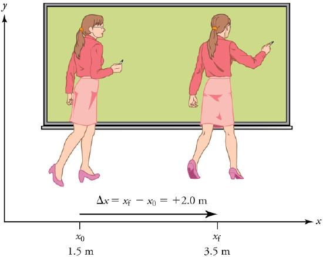

Note that displacement has a direction as well as a magnitude. The professor’s displacement in Figure \( is 2.0 m to the right, and the airline passenger’s displacement is 4.0 m toward the rear in Figure \( . In one-dimensional motion, direction can be specified with a plus or minus sign. When you begin a problem, you should select which direction is positive (usually that will be to the right or up, but you are free to select positive as being any direction). The professor’s initial position is size x0 = 1.5 m and her final position is xf= 3.5 m. Thus her displacement is
In this coordinate system, motion to the right is positive, whereas motion to the left is negative. Similarly, the airplane passenger’s initial position is \(\displaystyle x_0=6.0 m\) and his final position is \(\displaystyle x_f=2.0 m\), so his displacement is
His displacement is negative because his motion is toward the rear of the plane, or in the negative size 12{x} {} direction in our coordinate system.
Although displacement is described in terms of direction, distance is not.Distanceis defined to be themagnitude or size of displacement between two positions. Note that the distance between two positions is not the same as the distance traveled between them.Distance traveledisthe total length of the path traveled between two positions.Distance has no direction and, thus, no sign. For example, the distance the professor walks is 2.0 m. The distance the airplane passenger walks is 4.0 m.
Misconception Alert: Distance Traveled vs. Magnitude of Displacement
It is important to note that the distance traveled, however, can be greater than the magnitude of the displacement (by magnitude, we mean just the size of the displacement without regard to its direction; that is, just a number with a unit). For example, the professor could pace back and forth many times, perhaps walking a distance of 150 m during a lecture, yet still end up only 2.0 m to the right of her starting point. In this case her displacement would be +2.0 m, the magnitude of her displacement would be 2.0 m, but the distance she traveled would be 150 m. In kinematics we nearly always deal with displacement and magnitude of displacement, and almost never with distance traveled. One way to think about this is to assume you marked the start of the motion and the end of the motion. The displacement is simply the difference in the position of the two marks and is independent of the path taken in traveling between the two marks. The distance traveled, however, is the total length of the path taken between the two marks.
Exercise
A cyclist rides 3 km west and then turns around and rides 2 km east.
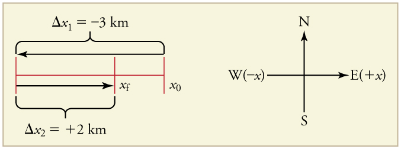
The rider’s displacement is \(\displaystyle Δ_x=x_f−x_0=−1 km\). (The displacement is negative because we take east to be positive and west to be negative.)
The distance traveled is \(\displaystyle 3 km+2 km=5 km\).
The magnitude of the displacement is \(\displaystyle 1 km\).
where \(\displaystyle x_0\) is the initial position and xf is the final position. In this text, the Greek letter \(\displaystyle Δ\) (delta) always means “change in” whatever quantity follows it. The SI unit for displacement is the meter (m). Displacement has a direction as well as a magnitude.
📖 OpenStax College Physics, Section 2.1. openstax.org · CC BY 4.0
- Define and distinguish between scalar and vector quantities.
- Assign a coordinate system for a scenario involving one-dimensional motion.
What is the difference between distance and displacement? Whereas displacement is defined by both direction and magnitude, distance is defined only by magnitude. Displacement is an example of a vector quantity. Distance is an example of a scalar quantity. Avectoris any quantity with bothmagnitude and direction. Other examples of vectors include a velocity of 90 km/h east and a force of 500 newtons straight down.
The direction of a vector in one-dimensional motion is given simply by a plus (+) or minus (−) sign. Vectors are represented graphically by arrows. An arrow used to represent a vector has a length proportional to the vector’s magnitude (e.g., the larger the magnitude, the longer the length of the vector) and points in the same direction as the vector.
Some physical quantities, like distance, either have no direction or none is specified. A scalar is any quantity that has a magnitude, but no direction. For example, a 20ºC temperature, the 250 kilocalories (250 Calories) of energy in a candy bar, a 90 km/h speed limit, a person’s 1.8 m height, and a distance of 2.0 m are all scalars—quantities with no specified direction. Note, however, that a scalar can be negative, such as a −20ºC temperature. In this case, the minus sign indicates a point on a scale rather than a direction. Scalars are never represented by arrows.
In order to describe the direction of a vector quantity, you must designate a coordinate system within the reference frame. For one-dimensional motion, this is a simple coordinate system consisting of a one-dimensional coordinate line. In general, when describing horizontal motion, motion to the right is usually considered positive, and motion to the left is considered negative. With vertical motion, motion up is usually positive and motion down is negative. In some cases, however, as with the jet in Figure , it can be more convenient to switch the positive and negative directions. For example, if you are analyzing the motion of falling objects, it can be useful to define downwards as the positive direction. If people in a race are running to the left, it is useful to define left as the positive direction. It does not matter as long as the system is clear and consistent. Once you assign a positive direction and start solving a problem, you cannot change it.
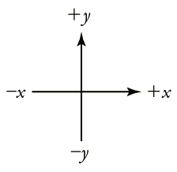
Exercise
A person’s speed can stay the same as he or she rounds a corner and changes direction. Given this information, is speed a scalar or a vector quantity? Explain.
Speed is a scalar quantity. It does not change at all with direction changes; therefore, it has magnitude only. If it were a vector quantity, it would change as direction changes (even if its magnitude remained constant).
📖 OpenStax College Physics, Section 2.2. openstax.org · CC BY 4.0
- Explain the relationships between instantaneous velocity, average velocity, instantaneous speed, average speed, displacement, and time.
- Calculate velocity and speed given initial position, initial time, final position, and final time.
- Derive a graph of velocity vs. time given a graph of position vs. time.
- Interpret a graph of velocity vs. time.
There is more to motion than distance and displacement. Questions such as, “How long does a foot race take?” and “What was the runner’s speed?” cannot be answered without an understanding of other concepts. In this section we add definitions of time, velocity, and speed to expand our description of motion.
As discussed inPhysical Quantities and Units, the most fundamental physical quantities are defined by how they are measured. This is the case with time. Every measurement of time involves measuring a change in some physical quantity. It may be a number on a digital clock, a heartbeat, or the position of the Sun in the sky. In physics, the definition oftimeis simple—timeischange, or the interval over which change occurs. It is impossible to know that time has passed unless something changes.
The amount of time or change is calibrated by comparison with a standard. The SI unit for time is the second, abbreviated s. We might, for example, observe that a certain pendulum makes one full swing every 0.75 s. We could then use the pendulum to measure time by counting its swings or, of course, by connecting the pendulum to a clock mechanism that registers time on a dial. This allows us to not only measure the amount of time, but also to determine a sequence of events.
How does time relate to motion? We are usually interested in elapsed time for a particular motion, such as how long it takes an airplane passenger to get from his seat to the back of the plane. To find elapsed time, we note the time at the beginning and end of the motion and subtract the two. For example, a lecture may start at 11:00 A.M. and end at 11:50 A.M., so that the elapsed time would be 50 min.Elapsed time\(Δt\) is the difference between the ending time and beginning time,
where \(Δt\) is the change in time or elapsed time, \(t_f\) is the time at the end of the motion, and \(t_0\) is the time at the beginning of the motion. (As usual, the delta symbol, \(Δ\), means the change in the quantity that follows it.)
Life is simpler if the beginning time \(t_0\) is taken to be zero, as when we use a stopwatch. If we were using a stopwatch, it would simply read zero at the start of the lecture and 50 min at the end. If \(t_0=0\), then
In this text, for simplicity’s sake,
Your notion of velocity is probably the same as its scientific definition. You know that if you have a large displacement in a small amount of time you have a large velocity, and that velocity has units of distance divided by time, such as miles per hour or kilometers per hour.
Definition: AVERAGE VELOCITY
Average velocityisdisplacement (change in position) divided by the time of travel,
where \(\bar{v}\) is the average (indicated by the bar over the \(v\)) velocity, \(Δx\) is the change in position (or displacement), and \(x_f\) and \(x_0\) are the final and beginning positions at times \(t_f\) and \(t_0\), respectively. If the starting time \(t_0\) is taken to be zero, then the average velocity is simply
Notice that this definition indicates thatvelocity is a vector because displacement is a vector. It has both magnitude and direction. The SI unit for velocity is meters per second or m/s, but many other units, such as km/h, mi/h (also written as mph), and cm/s, are in common use. Suppose, for example, an airplane passenger took 5 seconds to move −4 m (the negative sign indicates that displacement is toward the back of the plane). His average velocity would be
The minus sign indicates the average velocity is also toward the rear of the plane.
The average velocity of an object does not tell us anything about what happens to it between the starting point and ending point, however. For example, we cannot tell from average velocity whether the airplane passenger stops momentarily or backs up before he goes to the back of the plane. To get more details, we must consider smaller segments of the trip over smaller time intervals.
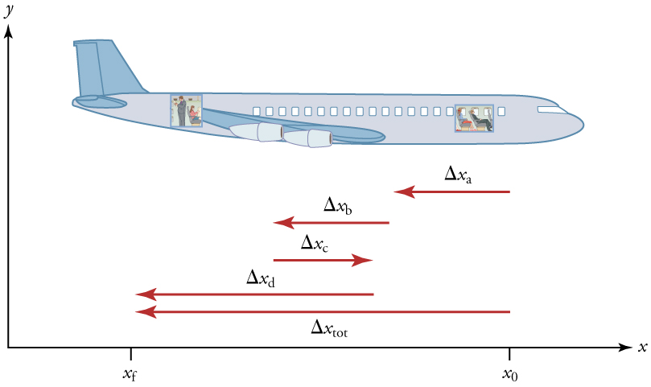
The smaller the time intervals considered in a motion, the more detailed the information. When we carry this process to its logical conclusion, we are left with an infinitesimally small interval. Over such an interval, the average velocity becomes theinstantaneous velocityor thevelocity at a specific instant. A car’s speedometer, for example, shows the magnitude (but not the direction) of the instantaneous velocity of the car. (Police give tickets based on instantaneous velocity, but when calculating how long it will take to get from one place to another on a road trip, you need to use average velocity.)Instantaneous velocity\(v\) is the average velocity at a specific instant in time (or over an infinitesimally small time interval).
Mathematically, finding instantaneous velocity, \(v\), at a precise instant \(t\) can involve taking a limit, a calculus operation beyond the scope of this text. However, under many circumstances, we can find precise values for instantaneous velocity without calculus.
In everyday language, most people use the terms “speed” and “velocity” interchangeably. In physics, however, they do not have the same meaning and they are distinct concepts. One major difference is that speed has no direction. Thusspeed is a scalar. Just as we need to distinguish between instantaneous velocity and average velocity, we also need to distinguish between instantaneous speed and average speed.
Instantaneous speedis the magnitude of instantaneous velocity. For example, suppose the airplane passenger at one instant had an instantaneous velocity of −3.0 m/s (the minus meaning toward the rear of the plane). At that same time his instantaneous speed was 3.0 m/s. Or suppose that at one time during a shopping trip your instantaneous velocity is 40 km/h due north. Your instantaneous speed at that instant would be 40 km/h—the same magnitude but without a direction. Average speed, however, is very different from average velocity.Average speedis the distance traveled divided by elapsed time.
We have noted that distance traveled can be greater than displacement. So average speed can be greater than average velocity, which is displacement divided by time. For example, if you drive to a store and return home in half an hour, and your car’s odometer shows the total distance traveled was 6 km, then your average speed was 12 km/h. Your average velocity, however, was zero, because your displacement for the round trip is zero. (Displacement is change in position and, thus, is zero for a round trip.) Thus average speed isnotsimply the magnitude of average velocity.
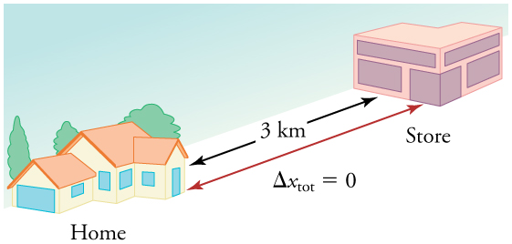
Another way of visualizing the motion of an object is to use a graph. A plot of position or of velocity as a function of time can be very useful. For example, for this trip to the store, the position, velocity, and speed-vs.-time graphs are displayed in Figure . (Note that these graphs depict a very simplifiedmodelof the trip. We are assuming that speed is constant during the trip, which is unrealistic given that we’ll probably stop at the store. But for simplicity’s sake, we will model it with no stops or changes in speed. We are also assuming that the route between the store and the house is a perfectly straight line.)
![Three line graphs. First line graph is of position in kilometers versus time in hours. The line increases linearly from 0 kilometers to 6 kilometers in the first 0 point 25 hours. It then decreases linearly from 6 kilometers to 0 kilometers between 0 point 25 and 0 point 5 hours. Second line graph shows velocity in kilometers per hour versus time in hours. The line is flat at 12 kilometers per hour from time 0 to time 0 point 25. It is vertical at time 0 point 25, dropping from 12 kilometers per hour to negative 12 kilometers per hour. It is flat again at negative 12 kilometers per hour from 0 point 25 hours to 0 point 5 hours. Third line graph shows speed in kilometers per hour versus time in hours. The line is flat at 12 kilometers per hour from time equals 0 to time equals 0 point 5 hours.](images/ch2/fig2-11-three-line-graphs-first-line-graph-is-of.jpg)
MAKING CONNECTIONS: TAKE-HOME INVESTIGATION - GETTING A SENSE OF SPEED
If you have spent much time driving, you probably have a good sense of speeds between about 10 and 70 miles per hour. But what are these in meters per second? What do we mean when we say that something is moving at 10 m/s? To get a better sense of what these values really mean, do some observations and calculations on your own:
Exercise
A commuter train travels from Baltimore to Washington, DC, and back in 1 hour and 45 minutes. The distance between the two stations is approximately 40 miles. What is
(a) The average velocity of the train is zero because \(x_f=x_0\); the train ends up at the same place it starts.
(b) The average speed of the train is calculated below. Note that the train travels 40 miles one way and 40 miles back, for a total distance of 80 miles.
📖 OpenStax College Physics, Section 2.3. openstax.org · CC BY 4.0
- Define and distinguish between instantaneous acceleration, average acceleration, and deceleration.
- Calculate acceleration given initial time, initial velocity, final time, and final velocity.
In everyday conversation, to accelerate means to speed up. The accelerator in a car can in fact cause it to speed up. The greater theacceleration, the greater the change in velocity over a given time. The formal definition of acceleration is consistent with these notions, but more inclusive.
Definition: Average Acceleration
Theaverage accelerationis the rate at which velocity changes,
where \(\bar{a}\) is average acceleration, \(v\) is velocity, and \( t\) is time. (The bar over the \(a\) meansaverage.)
Because acceleration is velocity in m/s divided by time in s, the SI units for acceleration are \( m/s^2\), meters per second squared or meters per second per second, which literally means by how many meters per second the velocity changes every second.
Recall that velocity is a vector—it has both magnitude and direction. This means that a change in velocity can be a change in magnitude (or speed), but it can also be a change in direction. For example, if a car turns a corner at constant speed, it is accelerating because its direction is changing. The quicker you turn, the greater the acceleration. So there is an acceleration when velocity changes either in magnitude (an increase or decrease in speed) or in direction, or both.
ACCELERATION AS A VECTOR
Acceleration is a vector in the same direction as the change in velocity, \(Δv\). Since velocity is a vector, it can change either in magnitude or in direction. Acceleration is therefore a change in either speed or direction, or both.
Keep in mind that although acceleration is in the direction of thechangein velocity, it is not always in the direction ofmotion. When an object slows down, its acceleration is opposite to the direction of its motion. This is known asdeceleration.
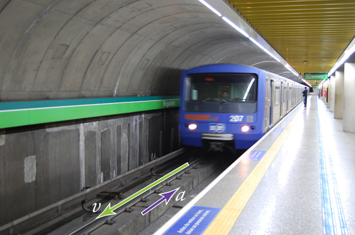
MISCONCEPTION ALERT: DECELERATION VS. NEGATIVE ACCELERATION
Deceleration always refers to acceleration in the direction opposite to the direction of the velocity. Deceleration always reduces speed. Negative acceleration, however, is acceleration in the negative direction in the chosen coordinate system. Negative acceleration may or may not be deceleration, and deceleration may or may not be considered negative acceleration. If acceleration has the same sign as the velocity, the object is speeding up. If acceleration has the opposite sign as the velocity, the object is slowing down. For example, consider Figure .
![Four separate diagrams of cars moving. Diagram a: A car moving toward the right. A velocity vector arrow points toward the right. An acceleration vector arrow also points toward the right. Diagram b: A car moving toward the right in the positive x direction. A velocity vector arrow points toward the right. An acceleration vector arrow points toward the left. Diagram c: A car moving toward the left. A velocity vector arrow points toward the left. An acceleration vector arrow points toward the right. Diagram d: A car moving toward the left. A velocity vector arrow points toward the left. An acceleration vector arrow also points toward the left.](images/ch2/fig2-14-four-separate-diagrams-of-cars-moving-di.png)
A racehorse coming out of the gate accelerates from rest to a velocity of 15.0 m/s due west in 1.80 s. What is its average acceleration?
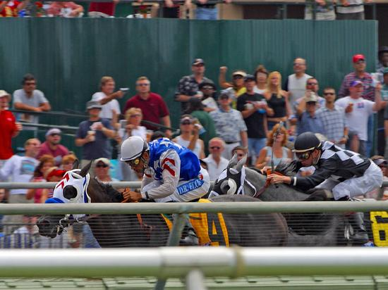
First we draw a sketch and assign a coordinate system to the problem. This is a simple problem, but it always helps to visualize it. Notice that we assign east as positive and west as negative. Thus, in this case, we have negative velocity.
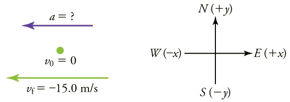
We can solve this problem by identifying \(Δv\) and \(Δt\) from the given information and then calculating the average acceleration directly from the Equation \ref{averagea}:
The negative sign for acceleration indicates that acceleration is toward the west. An acceleration of \(8.33\, m/s^2\) due west means that the horse increases its velocity by 8.33 m/s due west each second, that is, 8.33 meters per second per second, which we write as \( 8.33\, m/s^2\). This is truly an average acceleration, because the ride is not smooth. We shall see later that an acceleration of this magnitude would require the rider to hang on with a force nearly equal to his weight.
Instantaneous acceleration \( a\), or the acceleration at a specific instant in time, is obtained by the same process as discussed for instantaneous velocity inTime, Velocity, and Speed—that is, by considering an infinitesimally small interval of time. How do we find instantaneous acceleration using only algebra? The answer is that we choose an average acceleration that is representative of the motion. Figure shows graphs of instantaneous acceleration versus time for two very different motions. In Figure \(\PageIndex{6a}\), the acceleration varies slightly and the average over the entire interval is nearly the same as the instantaneous acceleration at any time. In this case, we should treat this motion as if it had a constant acceleration equal to the average (in this case about \(1.8 m/s^2\)). In Figure \(\PageIndex{6b}\), the acceleration varies drastically over time. In such situations it is best to consider smaller time intervals and choose an average acceleration for each. For example, we could consider motion over the time intervals from 0 to 1.0 s and from 1.0 to 3.0 s as separate motions with accelerations of \( +3.0\, m/s^2\) and \( –2.0 \,m/s^2\), respectively.
![Line graphs of instantaneous acceleration in meters per second per second versus time in seconds. The line on graph (a) shows slight variation above and below an average acceleration of about 1 point 8 meters per second per second. The line on graph (b) shows great variation over time, with instantaneous acceleration constant at 3 point 0 meters per second per second for 1 second, then dropping to negative 2 point 0 meters per second per second for the next 2 seconds, and then rising again, and so forth.](images/ch2/fig2-17-line-graphs-of-instantaneous-acceleratio.png)
The next several examples consider the motion of the subway train shown in Figure . In Figure \(\PageIndex{7a}\) the shuttle moves to the right, and in Figure \(\PageIndex{7b}\) it moves to the left. The examples are designed to further illustrate aspects of motion and to illustrate some of the reasoning that goes into solving problems.
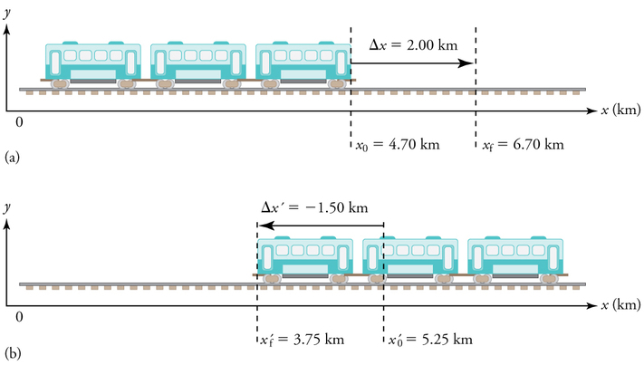
What are the magnitude and sign of displacements for the motions of the subway train shown in parts (a) and (b) of Figure ?
A drawing with a coordinate system is already provided, so we don’t need to make a sketch, but we should analyze it to make sure we understand what it is showing. Pay particular attention to the coordinate system. To find displacement, we use the equation \( Δx=x_f−x_0\). This is straightforward since the initial and final positions are given.
The direction of the motion in (a) is to the right and therefore its displacement has a positive sign, whereas motion in (b) is to the left and thus has a negative sign.
To answer this question, think about the definitions of distance and distance traveled, and how they are related to displacement. Distance between two positions is defined to be the magnitude of displacement, which was found in Example . Distance traveled is the total length of the path traveled between the two positions (see Section onDisplacement). In the case of the subway train shown in Figure , the distance traveled is the same as the distance between the initial and final positions of the train.
1. The displacement for part (a) was +2.00 km. Therefore, the distance between the initial and final positions was 2.00 km, and the distance traveled was 2.00 km.
2. The displacement for part (b) was \( −1.5 km\). Therefore, the distance between the initial and final positions was 1.50 km, and the distance traveled was 1.50 km.
Distance is a scalar. It has magnitude but no sign to indicate direction.
Suppose the train in Figure \(\PageIndex{7a}\) accelerates from rest to 30.0 km/h in the first 20.0 s of its motion. What is its average acceleration during that time interval?
It is worth it at this point to make a simple sketch:
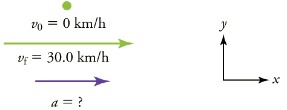
The plus sign means that acceleration is to the right. This is reasonable because the train starts from rest and ends up with a velocity to the right (also positive). So acceleration is in the same direction as the change in velocity, as is always the case.
A Subway Train Slowing Down: Now suppose that at the end of its trip, the train in Figure \(\PageIndex{7a}\) slows to a stop from a speed of 30.0 km/h in 8.00 s. What is its average acceleration while stopping?
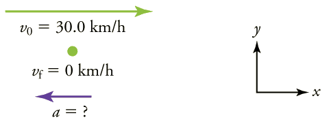
In this case, the train is decelerating and its acceleration is negative because it is toward the left. As in the previous example, we must find the change in velocity and the change in time and then solve for acceleration.
The minus sign indicates that acceleration is to the left. This sign is reasonable because the train initially has a positive velocity in this problem, and a negative acceleration would oppose the motion. Again, acceleration is in the same direction as the change in velocity, which is negative here. This acceleration can be called a deceleration because it has a direction opposite to the velocity.
The graphs of position, velocity, and acceleration vs. time for the trains in Example and are displayed in Figure . (We have taken the velocity to remain constant from 20 to 40 s, after which the train decelerates.)
![Three graphs. The first is a line graph of position in meters versus time in seconds. The line begins at the origin and has a concave up shape from time equals zero to time equals twenty seconds. It is straight with a positive slope from twenty seconds to forty seconds. It is then convex up from forty to fifty seconds. The second graph is a line graph of velocity in meters per second versus time in seconds. The line is straight with a positive slope beginning at the origin from 0 to twenty seconds. It is flat from twenty to forty seconds. From forty to fifty seconds the line is straight with a negative slope back down to a velocity of 0. The third graph is a line graph of acceleration in meters per second per second versus time in seconds. The line is flat with a positive constant acceleration from zero to twenty seconds. The line then drops to an acceleration of 0 from twenty to forty seconds. The line drops again to a negative acceleration from forty to fifty seconds.](images/ch2/fig2-21-three-graphs-the-first-is-a-line-graph-o.png)
What is the average velocity of the train in part b of Example , and shown again below, if it takes 5.00 min to make its trip?
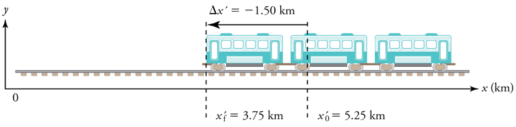
Average velocity is displacement divided by time. It will be negative here, since the train moves to the left and has a negative displacement.
The negative velocity indicates motion to the left.
Finally, suppose the train in Figure slows to a stop from a velocity of 20.0 km/h in 10.0 s. What is its average acceleration?
Once again, let’s draw a sketch:
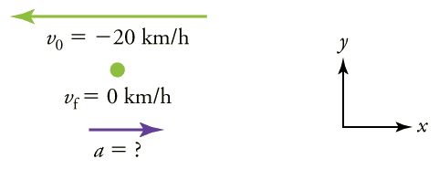
The plus sign means that acceleration is to the right. This is reasonable because the train initially has a negative velocity (to the left) in this problem and a positive acceleration opposes the motion (and so it is to the right). Again, acceleration is in the same direction as the change in velocity, which is positive here. As in Example , this acceleration can be called a deceleration since it is in the direction opposite to the velocity.
Perhaps the most important thing to note about these examples is the signs of the answers. In our chosen coordinate system, plus means the quantity is to the right and minus means it is to the left. This is easy to imagine for displacement and velocity. But it is a little less obvious for acceleration. Most people interpret negative acceleration as the slowing of an object. This was not the case in Example , where a positive acceleration slowed a negative velocity. The crucial distinction was that the acceleration was in the opposite direction from the velocity. In fact, a negative acceleration will increase a negative velocity. For example, the train moving to the left in Figure Figure is sped up by an acceleration to the left. In that case, both v and a are negative. The plus and minus signs give the directions of the accelerations. If acceleration has the same sign as the velocity, the object is speeding up. If acceleration has the opposite sign as the velocity, the object is slowing down.
Exercise
An airplane lands on a runway traveling east. Describe its acceleration.
If we take east to be positive, then the airplane has negative acceleration, as it is accelerating toward the west. It is also decelerating: its acceleration is opposite in direction to its velocity.
PHET EXPLORATIONS: MOVING MAN SIMULATION
Learn about position, velocity, and acceleration graphs with thePhET Moving Man simulation. Move the little man back and forth with the mouse and plot his motion. Set the position, velocity, or acceleration and let the simulation move the man for you.
📖 OpenStax College Physics, Section 2.4. openstax.org · CC BY 4.0
- Calculate displacement of an object that is not accelerating, given initial position and velocity.
- Calculate final velocity of an accelerating object, given initial velocity, acceleration, and time.
- Calculate displacement and final position of an accelerating object, given initial position, initial velocity, time, and acceleration.
We might know that the greater the acceleration of, say, a car moving away from a stop sign, the greater the displacement in a given time. But we have not developed a specific equation that relates acceleration and displacement. In this section, we develop some convenient equations for kinematic relationships, starting from the definitions of displacement, velocity, and acceleration already covered.
First, let us make some simplifications in notation. Taking the initial time to be zero, as if time is measured with a stopwatch, is a great simplification. Since elapsed time is \(\displaystyle Δt=t_f−t_0\), taking \(\displaystyle t_0=0\) means that \(\displaystyle Δt=t_f\), the final time on the stopwatch. When initial time is taken to be zero, we use the subscript 0 to denote initial values of position and velocity. That is, \(\displaystyle x_0\) is the initial position and \(\displaystyle v_0\) isthe initial velocity. We put no subscripts on the final values. That is, \(\displaystyle t\) isthe final time, \(\displaystyle x\) isthe final position, and \(\displaystyle v\) isthe final velocity. This gives a simpler expression for elapsed time—now, \(\displaystyle Δt=t\). It also simplifies the expression for displacement, which is now \(\displaystyle Δx=x−x_0\). Also, it simplifies the expression for change in velocity, which is now \(\displaystyle Δv=v−v_0\). To summarize, using the simplified notation, with the initial time taken to be zero,
wherethe subscript 0 denotes an initial value and the absence of a subscript denotes a final valuein whatever motion is under consideration.
We now make the important assumption thatacceleration is constant. This assumption allows us to avoid using calculus to find instantaneous acceleration. Since acceleration is constant, the average and instantaneous accelerations are equal. That is,
so we use the symbol a for acceleration at all times. Assuming acceleration to be constant does not seriously limit the situations we can study nor degrade the accuracy of our treatment. For one thing, acceleration is constant in a great number of situations. Furthermore, in many other situations we can accurately describe motion by assuming a constant acceleration equal to the average acceleration for that motion. Finally, in motions where acceleration changes drastically, such as a car accelerating to top speed and then braking to a stop, the motion can be considered in separate parts, each of which has its own constant acceleration.
SOLVING FOR DISPLACEMENT (Δx) AND FINAL POSITION (x) FROM AVERAGE VELOCITY WHEN ACCELERATION (a) IS CONSTANT
To get our first two new equations, we start with the definition of average velocity:
Substituting the simplified notation for \(\displaystyle Δx\) and \(\displaystyle Δt\) yields
Solving for \(\displaystyle x\) yields
where the average velocity is
Equation \ref{eq5} reflects the fact that, when acceleration is constant, \(v\) is just the simple average of the initial and final velocities. For example, if you steadily increase your velocity (that is, with constant acceleration) from 30 to 60 km/h, then your average velocity during this steady increase is 45 km/h. Using the equation \(\displaystyle \bar{v}=\frac{v_0+v}{2}\) to check this, we see that
A jogger runs down a straight stretch of road with an average velocity of 4.00 m/s for 2.00 min. What is his final position, taking his initial position to be zero?
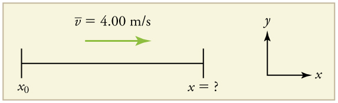
The final position is given by the equation
To find \(\displaystyle x\), we identify the values of \(\displaystyle x_0, \bar{v}\), and \(\displaystyle t\) from the statement of the problem and substitute them into the equation.
Velocity and final displacement are both positive, which means they are in the same direction.
The equation \(\displaystyle x=x_0+\bar{v}t\) gives insight into the relationship between displacement, average velocity, and time. It shows, for example, that displacement is a linear function of average velocity. (By linear function, we mean that displacement depends on \(\displaystyle \bar{v}\) rather than on \(\displaystyle \bar{v}\) raised to some other power, such as \(\displaystyle \bar{v}^2\). When graphed, linear functions look like straight lines with a constant slope.) On a car trip, for example, we will get twice as far in a given time if we average 90 km/h than if we average 45 km/h.
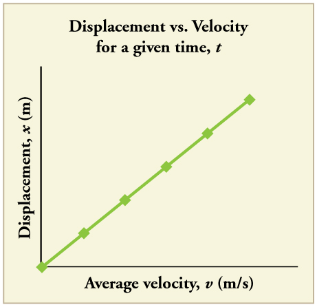
SOLVING FOR FINAL VELOCITY
We can derive another useful equation by manipulating the definition of acceleration.
Substituting the simplified notation for \(\displaystyle Δv\) and \(\displaystyle Δt\) gives us
\[\displaystyle a=\frac{v−v_0}{t}\] (constant a).
Solving for \(\displaystyle v\) yields
\[\displaystyle v=v_0+at\](constanta).
An airplane lands with an initial velocity of 70.0 m/s and then decelerates at \(\displaystyle 1.50 m/s^2\) for 40.0 s. What is its final velocity?
Draw a sketch. We draw the acceleration vector in the direction opposite the velocity vector because the plane is decelerating.
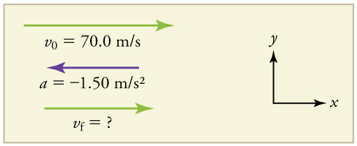
1. Identify the knowns. \(\displaystyle v_0=70.0 m/s, a=−1.50 m/s^2, t=40.0s.\)
2. Identify the unknown. In this case, it is final velocity, \(\displaystyle v_f\).
3. Determine which equation to use. We can calculate the final velocity using the equation \(\displaystyle v=v_0+at\).
4. Plug in the known values and solve.
The final velocity is much less than the initial velocity, as desired when slowing down, but still positive. With jet engines, reverse thrust could be maintained long enough to stop the plane and start moving it backward. That would be indicated by a negative final velocity, which is not the case here.
![An airplane moving toward the right at two points in time. At time equals 0 the velocity vector arrow points toward the right and is labeled seventy meters per second. The acceleration vector arrow points toward the left and is labeled negative 1 point 5 meters per second squared. At time equals forty seconds, the velocity arrow is shorter, points toward the right, and is labeled ten meters per second. The acceleration vector arrow is still pointing toward the left and is labeled a equals negative 1 point 5 meters per second squared.](images/ch2/fig2-28-an-airplane-moving-toward-the-right-at-t.jpg)
In addition to being useful in problem solving, the equation \(\displaystyle v=v_0+at\) gives us insight into the relationships among velocity, acceleration, and time. From it we can see, for example, that
(All of these observations fit our intuition, and it is always useful to examine basic equations in light of our intuition and experiences to check that they do indeed describe nature accurately.)
MAKING CONNECTIONS: REAL-WORLD CONNECTION
An intercontinental ballistic missile (ICBM) has a larger average acceleration than the Space Shuttle and achieves a greater velocity in the first minute or two of flight (actual ICBM burn times are classified—short-burn-time missiles are more difficult for an enemy to destroy). But the Space Shuttle obtains a greater final velocity, so that it can orbit the earth rather than come directly back down as an ICBM does. The Space Shuttle does this by accelerating for a longer time.
SOLVING FOR FINAL POSITION WHEN VELOCITY IS NOT CONSTANT (a≠0)
We can combine the equations above to find a third equation that allows us to calculate the final position of an object experiencing constant acceleration. We start with
Adding \(\displaystyle v_0\) to each side of this equation and dividing by 2 gives
Since \\frac{(v_0+v}{2}=\bar{v}\) for constant acceleration, then
Now we substitute this expression for \(\displaystyle \bar{v}\) into the equation for displacement, \(\displaystyle x=x_0+\bar{v}t\), yielding
Dragsters can achieve average accelerations of \(\displaystyle 26.0 m/s^2\). Suppose such a dragster accelerates from rest at this rate for 5.56 s. How far does it travel in this time?
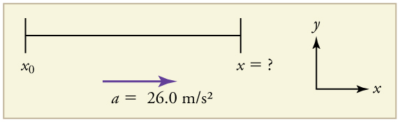
We are asked to find displacement, which is \(\displaystyle x\) if we take \(\displaystyle x_0\) to be zero. (Think about it like the starting line of a race. It can be anywhere, but we call it 0 and measure all other positions relative to it.) We can use the equation \(\displaystyle x=x_0+v_0t+\frac{1}{2}at^2\) once we identify \(\displaystyle v_0, a,\) and \(\displaystyle t\) from the statement of the problem.
1. Identify the knowns. Starting from rest means that \(\displaystyle v_0=0, a\) is given as \(\displaystyle 26.0m/s^2\) and t is given as 5.56 s.
2. Plug the known values into the equation to solve for the unknown x:
Since the initial position and velocity are both zero, this simplifies to
Substituting the identified values of a and t gives
If we convert 402 m to miles, we find that the distance covered is very close to one quarter of a mile, the standard distance for drag racing. So the answer is reasonable. This is an impressive displacement in only 5.56 s, but top-notch dragsters can do a quarter mile in even less time than this.
What else can we learn by examining the equation \(\displaystyle x=x_0+v_0t+\frac{1}{2}at^2\)? We see that:
SOLVING FOR FINAL VELOCITY WHEN VELOCITY IS NOT CONSTANT (a≠0)
A fourth useful equation can be obtained from another algebraic manipulation of previous equations.
If we solve \(\displaystyle v=v_0+at\) for \(\displaystyle t\), we get
Substituting this and \(\displaystyle \bar{v}=\frac{v_0+v}{2}\) into \(\displaystyle x=x_0+\bar{v}t\), we get
Calculate the final velocity of the dragster in Example without using information about time.
The equation \(\displaystyle v^2=v^2_0+2a(x−x_0)\) is ideally suited to this task because it relates velocities, acceleration, and displacement, and no time information is required.
1. Identify the known values. We know that \(\displaystyle v_0=0\), since the dragster starts from rest. Then we note that \(\displaystyle x−x_0=402 m\) (this was the answer in Example). Finally, the average acceleration was given to be \(\displaystyle a=26.0 m/s^2\).
2. Plug the knowns into the equation \(\displaystyle v^2=v^2_0+2a(x−x_0)\) and solve for \(\displaystyle v\).
To get \(\displaystyle v\), we take the square root:
145 m/s is about 522 km/h or about 324 mi/h, but even this breakneck speed is short of the record for the quarter mile. Also, note that a square root has two values; we took the positive value to indicate a velocity in the same direction as the acceleration.
An examination of the equation \(\displaystyle v^2=v^2_0+2a(x−x_0)\) can produce further insights into the general relationships among physical quantities:
In the following examples, we further explore one-dimensional motion, but in situations requiring slightly more algebraic manipulation. The examples also give insight into problem-solving techniques. The box below provides easy reference to the equations needed.
SUMMARY OF KINEMATIC EQUATIONS (CONSTANT a)
On dry concrete, a car can decelerate at a rate of \(7.00 m/s^2\), whereas on wet concrete it can decelerate at only \(5.00 m/s^2\). Find the distances necessary to stop a car moving at 30.0 m/s (about 110 km/h)
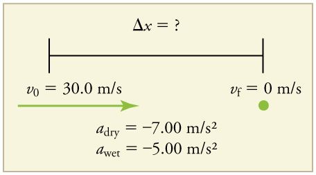
In order to determine which equations are best to use, we need to list all of the known values and identify exactly what we need to solve for. We shall do this explicitly in the next several examples, using tables to set them off.
1. Identify the knowns and what we want to solve for. We know that \(\displaystyle v_0=30.0 m/s; v=0; a=−7.00m/s^2\) (\(\displaystyle a\) is negative because it is in a direction opposite to velocity). We take \(\displaystyle x_0\) to be \(\displaystyle 0\). We are looking for displacement \(\displaystyle Δx\), or \(\displaystyle x−x_0\).
2. Identify the equation that will help up solve the problem. The best equation to use is
This equation is best because it includes only one unknown, \(\displaystyle x\). We know the values of all the other variables in this equation. (There are other equations that would allow us to solve for \(\displaystyle x\), but they require us to know the stopping time, \(\displaystyle t\), which we do not know. We could use them but it would entail additional calculations.)
3. Rearrange the equation to solve for \(\displaystyle x\).
4. Enter known values.
This part can be solved in exactly the same manner as Part A. The only difference is that the deceleration is \(\displaystyle –5.00 m/s^2\). The result is
Once the driver reacts, the stopping distance is the same as it is in Parts A and B for dry and wet concrete. So to answer this question, we need to calculate how far the car travels during the reaction time, and then add that to the stopping time. It is reasonable to assume that the velocity remains constant during the driver’s reaction time.
1. Identify the knowns and what we want to solve for. We know that \(\displaystyle \bar{v}=30.0 m/s; t_{reaction}=0.500s; a_{reaction}=0\). We take \(\displaystyle x_{0−reaction}\) to be 0. We are looking for \(\displaystyle x_{reaction}\).
2. Identify the best equation to use.
3. Plug in the knowns to solve the equation.
This means the car travels 15.0 m while the driver reacts, making the total displacements in the two cases of dry and wet concrete 15.0 m greater than if he reacted instantly.
4. Add the displacement during the reaction time to the displacement when braking.
a. 64.3 m + 15.0 m = 79.3 m when dryb. 90.0 m + 15.0 m = 105 m when wet
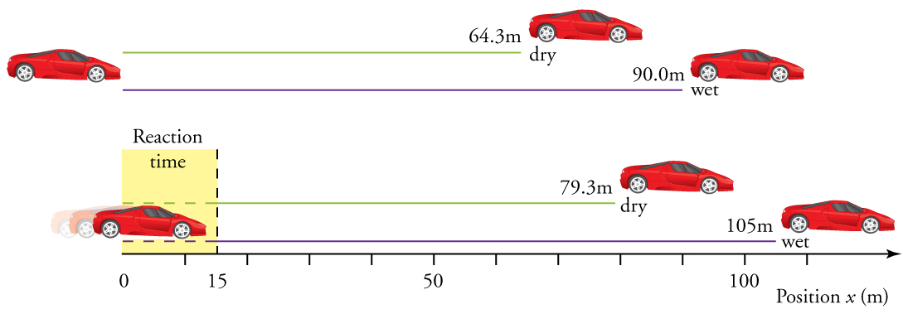
The displacements found in this example seem reasonable for stopping a fast-moving car. It should take longer to stop a car on wet rather than dry pavement. It is interesting that reaction time adds significantly to the displacements. But more important is the general approach to solving problems. We identify the knowns and the quantities to be determined and then find an appropriate equation. There is often more than one way to solve a problem. The various parts of this example can in fact be solved by other methods, but the solutions presented above are the shortest.
Suppose a car merges into freeway traffic on a 200-m-long ramp. If its initial velocity is 10.0 m/s and it accelerates at \(\displaystyle.00 m/s^2\), how long does it take to travel the 200 m up the ramp? (Such information might be useful to a traffic engineer.)
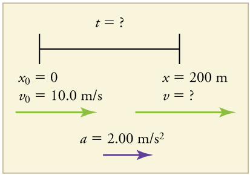
1. Identify the knowns and what we want to solve for. We know that \(\displaystyle v_0=10 m/s; a=2.00 m/s^2\); and \(\displaystyle x=200 m.\)
2. We need to solve for t. Choose the best equation. \(\displaystyle x=x_0+v_0t+\frac{1}{2}at^2\) works best because the only unknown in the equation is the variable t for which we need to solve.
3. We will need to rearrange the equation to solve for \(t\). In this case, it will be easier to plug in the knowns first.
4. Simplify the equation. The units of meters (m) cancel because they are in each term. We can get the units of seconds (s) to cancel by taking \(\displaystyle t=ts\), where \(\displaystyle t\) is the magnitude of time and s is the unit. Doing so leaves
5. Use the quadratic formula to solve for \(\displaystyle t\).
(a) Rearrange the equation to get 0 on one side of the equation.
This is a quadratic equation of the form
where the constants are \(\displaystyle a=1.00,b=10.0\),and \(\displaystyle c=−200.\)
(b) Its solutions are given by the quadratic formula:
This yields two solutions for \(\displaystyle t\), which are
In this case, then, the time is \(\displaystyle t=t\) in seconds, or
A negative value for time is unreasonable, since it would mean that the event happened 20 s before the motion began. We can discard that solution. Thus,
Whenever an equation contains an unknown squared, there will be two solutions. In some problems both solutions are meaningful, but in others, such as the above, only one solution is reasonable. The 10.0 s answer seems reasonable for a typical freeway on-ramp.
With the basics of kinematics established, we can go on to many other interesting examples and applications. In the process of developing kinematics, we have also glimpsed a general approach to problem solving that produces both correct answers and insights into physical relationships.Problem-Solving Basicsdiscusses problem-solving basics and outlines an approach that will help you succeed in this invaluable task.
MAKING CONNECTIONS: TAKE-HOME EXPERIMENT—BREAKING NEWS
We have been using SI units of meters per second squared to describe some examples of acceleration or deceleration of cars, runners, and trains. To achieve a better feel for these numbers, one can measure the braking deceleration of a car doing a slow (and safe) stop. Recall that, for average acceleration, \(\displaystyle \bar{a}=Δv/Δt\). While traveling in a car, slowly apply the brakes as you come up to a stop sign. Have a passenger note the initial speed in miles per hour and the time taken (in seconds) to stop. From this, calculate the deceleration in miles per hour per second. Convert this to meters per second squared and compare with other decelerations mentioned in this chapter. Calculate the distance traveled in braking.
Exercise
A manned rocket accelerates at a rate of \(\displaystyle 20 m/s^2\) during launch. How long does it take the rocket to reach a velocity of 400 m/s?
To answer this, choose an equation that allows you to solve for time \(\displaystyle t\), given only \(\displaystyle a, v_0\), and \(\displaystyle v\).
Rearrange to solve for \(\displaystyle t\).
📖 OpenStax College Physics, Section 2.5. openstax.org · CC BY 4.0
- Apply problem-solving steps and strategies to solve problems of one-dimensional kinematics.
- Apply strategies to determine whether or not the result of a problem is reasonable, and if not, determine the cause.
Problem-solving skills are obviously essential to success in a quantitative course in physics. More importantly, the ability to apply broad physical principles, usually represented by equations, to specific situations is a very powerful form of knowledge. It is much more powerful than memorizing a list of facts. Analytical skills and problem-solving abilities can be applied to new situations, whereas a list of facts cannot be made long enough to contain every possible circumstance. Such analytical skills are useful both for solving problems in this text and for applying physics in everyday and professional life.
While there is no simple step-by-step method that works for every problem, the following general procedures facilitate problem solving and make it more meaningful. A certain amount of creativity and insight is required as well.
Examine the situation to determine which physical principles are involved. It often helps todraw a simple sketchat the outset. You will also need to decide which direction is positive and note that on your sketch. Once you have identified the physical principles, it is much easier to find and apply the equations representing those principles. Although finding the correct equation is essential, keep in mind that equations represent physical principles, laws of nature, and relationships among physical quantities. Without a conceptual understanding of a problem, a numerical solution is meaningless.
Make a list of what is given or can be inferred from the problem as stated (identify the knowns). Many problems are stated very succinctly and require some inspection to determine what is known. A sketch can also be very useful at this point. Formally identifying the knowns is of particular importance in applying physics to real-world situations. Remember, “stopped” means velocity is zero, and we often can take initial time and position as zero.
Identify exactly what needs to be determined in the problem (identify the unknowns). In complex problems, especially, it is not always obvious what needs to be found or in what sequence. Making a list can help.
Find an equation or set of equations that can help you solve the problem. Your list of knowns and unknowns can help here. It is easiest if you can find equations that contain only one unknown—that is, all of the other variables are known, so you can easily solve for the unknown. If the equation contains more than one unknown, then an additional equation is needed to solve the problem. In some problems, several unknowns must be determined to get at the one needed most. In such problems it is especially important to keep physical principles in mind to avoid going astray in a sea of equations. You may have to use two (or more) different equations to get the final answer.
Substitute the knowns along with their units into the appropriate equation, and obtain numerical solutions complete with units. This step produces the numerical answer; it also provides a check on units that can help you find errors. If the units of the answer are incorrect, then an error has been made. However, be warned that correct units do not guarantee that the numerical part of the answer is also correct.
Check the answer to see if it is reasonable: Does it make sense?This final step is extremely important—the goal of physics is to accurately describe nature. To see if the answer is reasonable, check both its magnitude and its sign, in addition to its units. Your judgment will improve as you solve more and more physics problems, and it will become possible for you to make finer and finer judgments regarding whether nature is adequately described by the answer to a problem. This step brings the problem back to its conceptual meaning. If you can judge whether the answer is reasonable, you have a deeper understanding of physics than just being able to mechanically solve a problem.
When solving problems, we often perform these steps in different order, and we also tend to do several steps simultaneously. There is no rigid procedure that will work every time. Creativity and insight grow with experience, and the basics of problem solving become almost automatic. One way to get practice is to work out the text’s examples for yourself as you read. Another is to work as many end-of-section problems as possible, starting with the easiest to build confidence and progressing to the more difficult. Once you become involved in physics, you will see it all around you, and you can begin to apply it to situations you encounter outside the classroom, just as is done in many of the applications in this text.
Physics must describe nature accurately. Some problems have results that are unreasonable because one premise is unreasonable or because certain premises are inconsistent with one another. The physical principle applied correctly then produces an unreasonable result. For example, if a person starting a foot race accelerates at \(0.40 m/s^2\) for 100 s, his final speed will be \(40 m/s\) (about 150 km/h)—clearly unreasonable because the time of 100 s is an unreasonable premise. The physics is correct in a sense, but there is more to describing nature than just manipulating equations correctly. Checking the result of a problem to see if it is reasonable does more than help uncover errors in problem solving—it also builds intuition in judging whether nature is being accurately described.
Use the following strategies to determine whether an answer is reasonable and, if it is not, to determine what is the cause.
Solve the problem using strategies as outlined and in the format followed in the worked examples in the text. In the example given in the preceding paragraph, you would identify the givens as the acceleration and time and use the equation below to find the unknown final velocity. That is,
Check to see if the answer is reasonable. Is it too large or too small, or does it have the wrong sign, improper units, …? In this case, you may need to convert meters per second into a more familiar unit, such as miles per hour.
This velocity is about four times greater than a person can run—so it is too large.
If the answer is unreasonable, look for what specifically could cause the identified difficulty. In the example of the runner, there are only two assumptions that are suspect. The acceleration could be too great or the time too long. First look at the acceleration and think about what the number means. If someone accelerates at 0.40 m/s2, their velocity is increasing by 0.4 m/s each second. Does this seem reasonable? If so, the time must be too long. It is not possible for someone to accelerate at a constant rate of 0.40 m/s2 for 100 s (almost two minutes).
Step 1. Examine the situation to determine which physical principles are involved.
Step 2. Make a list of what is given or can be inferred from the problem as stated (identify the knowns).
Step 3. Identify exactly what needs to be determined in the problem (identify the unknowns).
Step 4. Find an equation or set of equations that can help you solve the problem.
Step 5. Substitute the knowns along with their units into the appropriate equation, and obtain numerical solutions complete with units.
Step 6. Check the answer to see if it is reasonable: Does it make sense?
📖 OpenStax College Physics, Section 2.6. openstax.org · CC BY 4.0
- Describe the effects of gravity on objects in motion.
- Describe the motion of objects that are in free fall.
- Calculate the position and velocity of objects in free fall.
Falling objects form an interesting class of motion problems. For example, we can estimate the depth of a vertical mine shaft by dropping a rock into it and listening for the rock to hit the bottom. By applying the kinematics developed so far to falling objects, we can examine some interesting situations and learn much about gravity in the process.
The most remarkable and unexpected fact about falling objects is that, if air resistance and friction are negligible, then in a given location all objects fall toward the center of Earth with thesame constant acceleration,independent of their mass. This experimentally determined fact is unexpected, because we are so accustomed to the effects of air resistance and friction that we expect light objects to fall slower than heavy ones.
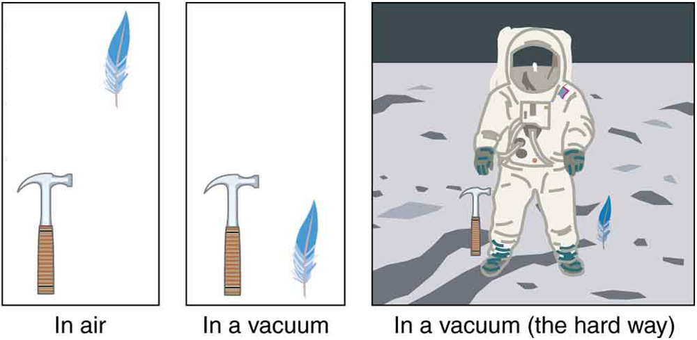
In the real world, air resistance can cause a lighter object to fall slower than a heavier object of the same size. A tennis ball will reach the ground after a hard baseball dropped at the same time. (It might be difficult to observe the difference if the height is not large.) Air resistance opposes the motion of an object through the air, while friction between objects—such as between clothes and a laundry chute or between a stone and a pool into which it is dropped—also opposes motion between them. For the ideal situations of these first few chapters, an objectfalling without air resistance or frictionis defined to be infree-fall.
The force of gravity causes objects to fall toward the center of Earth. The acceleration of free-falling objects is therefore called theaccelerationdue to gravity. The acceleration due to gravity isconstant, which means we can apply the kinematics equations to any falling object where air resistance and friction are negligible. This opens a broad class of interesting situations to us. The acceleration due to gravity is so important that its magnitude is given its own symbol, . It is constant at any given location on Earth and has the average value
Although varies from.78 m/s2to 9.83 m/s2, depending on latitude, altitude, underlying geological formations, and local topography, the average value of 9.80 m/s2 will be used in this text unless otherwise specified. The direction of the acceleration due to gravity is downward (towards the center of Earth). In fact, its direction defines what we call vertical. Note that whether the acceleration a in the kinematic equations has the value +g or −g depends on how we define our coordinate system. If we define the upward direction as negative, then a=−g=−9.80 m/s2, and if we define the downward direction as positive, then=g=9.80 m/s2.
The best way to see the basic features of motion involving gravity is to start with the simplest situations and then progress toward more complex ones. So we start by considering straight up and down motion with no air resistance or friction. These assumptions mean that the velocity (if there is any) is vertical. If the object is dropped, we know the initial velocity is zero. Once the object has left contact with whatever held or threw it, the object is in free-fall. Under these circumstances, the motion is one-dimensional and has constant acceleration of magnitude g. We will also represent vertical displacement with the symbol y and use x for horizontal displacement.
KINEMATIC EQUATIONS FOR OBJECTS IN FREE-FALL WHERE ACCELERATION = -G
A person standing on the edge of a high cliff throws a rock straight up with an initial velocity of 13.0 m/s.The rock misses the edge of the cliff as it falls back to earth. Calculate the position and velocity of the rock 1.00 s, 2.00 s, and 3.00 s after it is thrown, neglecting the effects of air resistance.
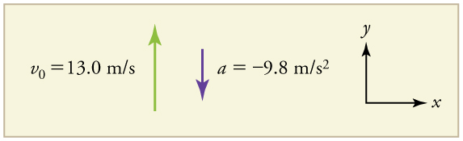
We are asked to determine the position \(y\) at various times. It is reasonable to take the initial position \(y_0\) to be zero. This problem involves one-dimensional motion in the vertical direction. We use plus and minus signs to indicate direction, with up being positive and down negative. Since up is positive, and the rock is thrown upward, the initial velocity must be positive too. The acceleration due to gravity is downward, so a is negative. It is crucial that the initial velocity and the acceleration due to gravity have opposite signs. Opposite signs indicate that the acceleration due to gravity opposes the initial motion and will slow and eventually reverse it.
Since we are asked for values of position and velocity at three times, we will refer to these as \(y_1\) and \(v_1; y_2\) and \(v_2\); and \(y_3\) and \(v_3\).
1. Identify the knowns. We know that \(y_0=0; v_0=13.0 m/s; a=−g=−9.80 m/s^2\); and \(t=1.00 s.\)
2. Identify the best equation to use. We will use \(y=y_0+v_0t+\frac{1}{2}at^2\) because it includes only one unknown, \(y\) (or \(y_1\), here), which is the value we want to find.
3. Plug in the known values and solve for \(y_1\).
The rock is 8.10 m above its starting point at \(t=1.00 s\), since \(y_1>y_0\). It could be moving up or down; the only way to tell is to calculate \(v_1\) and find out if it is positive or negative.
1. Identify the knowns. We know that \(y_0=0; v_0=13.0 m/s; a=−g=−9.80 m/s^2\); and \(t=1.00 s\). We also know from the solution above that \(y_1=8.10 m.\)
2. Identify the best equation to use. The most straightforward is \(v=v_0−gt\) (from \(v=v_0+at\), where a=gravitational acceleration=−g).
3. Plug in the knowns and solve.
The positive value for \(v_1\) means that the rock is still heading upward at \(t=1.00s\). However, it has slowed from its original 13.0 m/s, as expected.
The procedures for calculating the position and velocity at \(t=2.00s\) and \(3.00 s\) are the same as those above. The results are summarized in Table and illustrated in Figure.
| Time,t | Position,y | Velocity,v | Acceleration,a |
|---|---|---|---|
| .00 s | .10 m | .20 m/s\) | 9.80 m/s^2\) |
| .00 s | .40 m | 6.60 m/s\) | 9.80 m/s^2\) |
| .00 s | 5.10 m | 16.4 m/s\) | 9.80 m/s^2\) |
Graphing the data helps us understand it more clearly.
![Three panels showing three graphs. The top panel shows a graph of vertical position in meters versus time in seconds. The line begins at the origin and has a positive slope that decreases over time until it hits a turning point between seconds 1 and 2. After that it has a negative slope that increases over time. The middle panel shows a graph of velocity in meters per second versus time in seconds. The line is straight, with a negative slope, beginning at time zero velocity of thirteen meters per second and ending at time 3 seconds with a velocity just over negative sixteen meters per second. The bottom panel shows a graph of acceleration in meters per second squared versus time in seconds. The line is straight and flat at a y value of negative 9 point 80 meters per second squared from time 0 to time 3 seconds.](images/ch2/fig2-39-three-panels-showing-three-graphs-the-to.jpg)
The interpretation of these results is important. At 1.00 s the rock is above its starting point and heading upward, since \(y_1\) and \(v_1\) are both positive. At 2.00 s, the rock is still above its starting point, but the negative velocity means it is moving downward. At 3.00 s, both \(y_3\) and \(v_3\) are negative, meaning the rock is below its starting point and continuing to move downward. Notice that when the rock is at its highest point (at 1.5 s), its velocity is zero, but its acceleration is still \(−9.80 m/s^2\). Its acceleration is \(−9.80 m/s^2\) for the whole trip—while it is moving up and while it is moving down. Note that the values for y are the positions (or displacements) of the rock, not the total distances traveled. Finally, note that free-fall applies to upward motion as well as downward. Both have the same acceleration—the acceleration due to gravity, which remains constant the entire time. Astronauts training in the famous Vomit Comet, for example, experience free-fall while arcing up as well as down, as we will discuss in more detail later.The interpretation of these results is important. At 1.00 s the rock is above its starting point and heading upward, since y1 and v1 are both positive. At 2.00 s, the rock is still above its starting point, but the negative velocity means it is moving downward. At 3.00 s, both y3 and v3 are negative, meaning the rock is below its starting point and continuing to move downward. Notice that when the rock is at its highest point (at 1.5 s), its velocity is zero, but its acceleration is still −9.80 m/s2. Its acceleration is −9.80 m/s2 for the whole trip—while it is moving up and while it is moving down. Note that the values for y are the positions (or displacements) of the rock, not the total distances traveled. Finally, note that free-fall applies to upward motion as well as downward. Both have the same acceleration—the acceleration due to gravity, which remains constant the entire time. Astronauts training in the famous Vomit Comet, for example, experience free-fall while arcing up as well as down, as we will discuss in more detail later.
MAKING CONNECTIONS: TAKE-HOME EXPERIMENT—REACTION TIME
A simple experiment can be done to determine your reaction time. Have a friend hold a ruler between your thumb and index finger, separated by about 1 cm. Note the mark on the ruler that is right between your fingers. Have your friend drop the ruler unexpectedly, and try to catch it between your two fingers. Note the new reading on the ruler. Assuming acceleration is that due to gravity, calculate your reaction time. How far would you travel in a car (moving at 30 m/s) if the time it took your foot to go from the gas pedal to the brake was twice this reaction time?
What happens if the person on the cliff throws the rock straight down, instead of straight up? To explore this question, calculate the velocity of the rock when it is 5.10 m below the starting point, and has been thrown downward with an initial speed of 13.0 m/s.
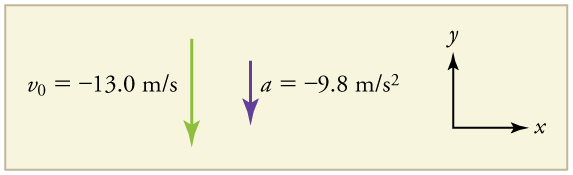
Since up is positive, the final position of the rock will be negative because it finishes below the starting point at \(y_0=0\). Similarly, the initial velocity is downward and therefore negative, as is the acceleration due to gravity. We expect the final velocity to be negative since the rock will continue to move downward.
1. Identify the knowns. \(y_0=0; y_1=−5.10 m; v_0=−13.0 m/s; a=−g=−9.80 m/s^2\).
2. Choose the kinematic equation that makes it easiest to solve the problem. The equation \(v^2=v^2_0+2a(y−y_0)\) works well because the only unknown in it is \(v\). (We will plug \(y_1\) in for \(y\).)
3. Enter the known values
where we have retained extra significant figures because this is an intermediate result.
Taking the square root, and noting that a square root can be positive or negative, gives
The negative root is chosen to indicate that the rock is still heading down. Thus,
Note thatthis is exactly the same velocity the rock had at this position when it was thrown straight upward with the same initial speed.(See Example and Figure(a).) This is not a coincidental result. Because we only consider the acceleration due to gravity in this problem, the speed of a falling object depends only on its initial speed and its vertical position relative to the starting point. For example, if the velocity of the rock is calculated at a height of 8.10 m above the starting point (using the method from Example) when the initial velocity is 13.0 m/s straight up, a result of \(±3.20 m/s\) is obtained. Here both signs are meaningful; the positive value occurs when the rock is at 8.10 m and heading up, and the negative value occurs when the rock is at 8.10 m and heading back down. It has the same speed but the opposite direction.
![Two figures are shown. At left, a man standing on the edge of a cliff throws a rock straight up with an initial speed of thirteen meters per second. At right, the man throws the rock straight down with a speed of thirteen meters per second. In both figures, a line indicates the rock’s trajectory. When the rock is thrown straight up, it has a speed of minus sixteen point four meters per second at minus five point one zero meters below the point where the man released the rock. When the rock is thrown straight down, the velocity is the same at this position.](images/ch2/fig2-41-two-figures-are-shown-at-left-a-man-stan.jpg)
Another way to look at it is this: In Example, the rock is thrown up with an initial velocity of \(13.0 m/s\). It rises and then falls back down. When its position is \(y=0\) on its way back down, its velocity is \(−13.0 m/s\). That is, it has the same speed on its way down as on its way up. We would then expect its velocity at a position of \(y=−5.10\) m to be the same whether we have thrown it upwards at \(+13.0 m/s\) or thrown it downwards at \(−13.0 m/s\). The velocity of the rock on its way down from \(y=0\) is the same whether we have thrown it up or down to start with, as long as the speed with which it was initially thrown is the same.
The acceleration due to gravity on Earth differs slightly from place to place, depending on topography (e.g., whether you are on a hill or in a valley) and subsurface geology (whether there is dense rock like iron ore as opposed to light rock like salt beneath you.) The precise acceleration due to gravity can be calculated from data taken in an introductory physics laboratory course. An object, usually a metal ball for which air resistance is negligible, is dropped and the time it takes to fall a known distance is measured. See, for example, Figure. Very precise results can be produced with this method if sufficient care is taken in measuring the distance fallen and the elapsed time.
![Figure has four panels. The first panel (on the top) is an illustration of a ball falling toward the ground at intervals of one tenth of a second. The space between the vertical position of the ball at one time step and the next increases with each time step. At time equals 0, position and velocity are also 0. At time equals 0 point 1 seconds, y position equals negative 0 point 049 meters and velocity is negative 0 point 98 meters per second. At 0 point 5 seconds, y position is negative 1 point 225 meters and velocity is negative 4 point 90 meters per second. The second panel (in the middle) is a line graph of position in meters versus time in seconds. Line begins at the origin and slopes down with increasingly negative slope. The third panel (bottom left) is a line graph of velocity in meters per second versus time in seconds. Line is straight, beginning at the origin and with a constant negative slope. The fourth panel (bottom right) is a line graph of acceleration in meters per second squared versus time in seconds. Line is flat, at a constant y value of negative 9 point 80 meters per second squared.](images/ch2/fig2-42-figure-has-four-panels-the-first-panel-o.jpg)
Suppose the ball falls 1.0000 m in 0.45173 s. Assuming the ball is not affected by air resistance, what is the precise acceleration due to gravity at this location?
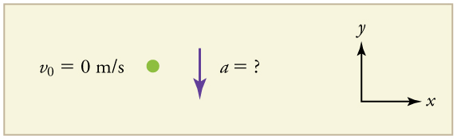
We need to solve for acceleration \(a.\) Note that in this case, displacement is downward and therefore negative, as is acceleration.
1. Identify the knowns. \(y_0=0; y=–1.0000 m; t=0.45173; v_0=0.\)
2. Choose the equation that allows you to solve for \(a\) using the known values.
3. Substitute 0 for \(v_0\) and rearrange the equation to solve for \(a\). Substituting 0 for \(v_0\)yields
Solving for \(a\) gives
4. Substitute known values yields
so, because \(a=−g\) with the directions we have chosen,
The negative value for a indicates that the gravitational acceleration is downward, as expected. We expect the value to be somewhere around the average value of \(9.80 m/s^2\), so \(9.8010 m/s^2\) makes sense. Since the data going into the calculation are relatively precise, this value for g is more precise than the average value of \(9.80 m/s%2\); it represents the local value for the acceleration due to gravity.
Exercise
A chunk of ice breaks off a glacier and falls 30.0 meters before it hits the water. Assuming it falls freely (there is no air resistance), how long does it take to hit the water?
We know that initial position \(y_0=0\), final position \(y=−30.0 m\), and \(a=−g=−9.80 m/s^2\). We can then use the equation \(y=y_0+v_0t+\frac{1}{2}at^2\) to solve for \(t\). Inserting \(a=−g\), we obtain
where we take the positive value as the physically relevant answer. Thus, it takes about 2.5 seconds for the piece of ice to hit the water.
PHET EXPLORATIONS: EQUATION GRAPHER
Learn about graphing polynomials. The shape of the curve changes as the constants are adjusted. View the curves for the individual terms (e.g. \(y=bx\)) to see how they add to generate the polynomial curve.
📖 OpenStax College Physics, Section 2.7. openstax.org · CC BY 4.0
- Describe a straight-line graph in terms of its slope andy-intercept.
- Determine average velocity or instantaneous velocity from a graph of position vs. time.
- Determine average or instantaneous acceleration from a graph of velocity vs. time.
- Derive a graph of velocity vs. time from a graph of position vs. time.
- Derive a graph of acceleration vs. time from a graph of velocity vs. time.
A graph, like a picture, is worth a thousand words. Graphs not only contain numerical information; they also reveal relationships between physical quantities. This section uses graphs of displacement, velocity, and acceleration versus time to illustrate one-dimensional kinematics.
First note that graphs in this text have perpendicular axes, one horizontal and the other vertical. When two physical quantities are plotted against one another in such a graph, the horizontal axis is usually considered to be an independent variable and the vertical axis a dependent variable. If we call the horizontal axis the x-axis and the vertical axis the y-axis, as in Figure , a straight-line graph has the general form
Here \(m\) is the slope, defined to be the rise divided by the run of the straight line (Figure . The letter \(b\) is used for they-intercept, which is the point at which the line crosses the vertical axis.
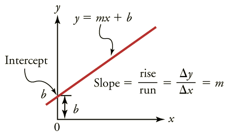
Time is usually an independent variable that other quantities, such as displacement, depend upon. A graph of displacement versus time would, thus, have on the vertical axis and on the horizontal axis. Figure is just such a straight-line graph. It shows a graph of displacement versus time for a jet-powered car on a very flat dry lake bed in Nevada.
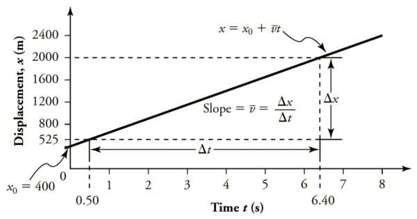
Using the relationship between dependent and independent variables, we see that the slope in the graph above is average velocity \(\bar{v}\) and the intercept is displacement at time zero—that is, \(x_0\). Substituting these symbols into \(y=mx+b\) gives
Thus a graph of displacement versus time gives a general relationship among displacement, velocity, and time, as well as giving detailed numerical information about a specific situation.
THE SLOPE OF \(X\) VS. \(T\)
The slope of the graph of displacement \(x\) vs. time \(t\) is velocity \(v\).
Notice that this equation is the same as that derived algebraically from other motion equations inMotion Equations for Constant Acceleration in One Dimension.
From the figure we can see that the car has a displacement of 25 m at 0.50 s and 2000 m at 6.40 s. Its displacement at other times can be read from the graph; furthermore, information about its velocity and acceleration can also be obtained from the graph.
Find the average velocity of the car whose position is graphed in Figure .
The slope of a graph of \(x\) vs. \(t\) is average velocity, since slope equals rise over run. In this case, rise = change in position and run = change in time, so that
Since the slope is constant here, any two points on the graph can be used to find the slope. (Generally speaking, it is most accurate to use two widely separated points on the straight line. This is because any error in reading data from the graph is proportionally smaller if the interval is larger.)
This is an impressively large land speed (900 km/h, or about 560 mi/h): much greater than the typical highway speed limit of 60 mi/h (27 m/s or 96 km/h), but considerably shy of the record of 343 m/s (1234 km/h or 766 mi/h) set in 1997.
The graphs in Figure below represent the motion of the jet-powered car as it accelerates toward its top speed, but only during the time when its acceleration is constant. Time starts at zero for this motion (as if measured with a stopwatch), and the displacement and velocity are initially 200 m and 15 m/s, respectively.
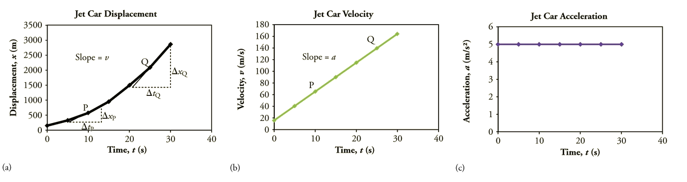
Figure \(\displaystyle :Graphs of motion of a jet-powered car during the time span when its acceleration is constant. (a) The slope of an \(\displaystyle x\) vs. \(\displaystyle t\) graph is velocity. This is shown at two points, and the instantaneous velocities obtained are plotted in the next graph. Instantaneous velocity at any point is the slope of the tangent at that point. (b) The slope of the \(\displaystyle v\) vs. \(\displaystyle t\) graph is constant for this part of the motion, indicating constant acceleration. (c) Acceleration has the constant value of \(\displaystyle 5.0 m/s^2\) over the time interval plotted.
The graph of displacement versus time in Figure \(\PageIndex{3a}\) is a curve rather than a straight line. The slope of the curve becomes steeper as time progresses, showing that the velocity is increasing over time. The slope at any point on a displacement-versus-time graph is the instantaneous velocity at that point. It is found by drawing a straight line tangent to the curve at the point of interest and taking the slope of this straight line. Tangent lines are shown for two points in Figure \(\PageIndex{3a}\). If this is done at every point on the curve and the values are plotted against time, then the graph of velocity versus time shown in Figure \(\PageIndex{3b}\) is obtained. Furthermore, the slope of the graph of velocity versus time is acceleration, which is shown in Figure \(\PageIndex{3c}\).
Calculate the velocity of the jet car at a time of 25 s by finding the slope of the \(\displaystyle vs. \(\displaystyle graph in the graph below
![A graph of displacement versus time for a jet car. The x axis for time runs from zero to thirty five seconds. The y axis for displacement runs from zero to three thousand meters. The curve depicting displacement is concave up. The slope of the curve increases over time. Slope equals velocity v. There are two points on the curve, labeled, P and Q. P is located at time equals ten seconds. Q is located and time equals twenty-five seconds. A line tangent to P at ten seconds is drawn and has a slope delta x sub P over delta t sub p. A line tangent to Q at twenty five seconds is drawn and has a slope equal to delta x sub q over delta t sub q. Select coordinates are given in a table and consist of the following: time zero seconds displacement two hundred meters; time five seconds displacement three hundred thirty eight meters; time ten seconds displacement six hundred meters; time fifteen seconds displacement nine hundred eighty eight meters. Time twenty seconds displacement one thousand five hundred meters; time twenty five seconds displacement two thousand one hundred thirty eight meters; time thirty seconds displacement two thousand nine hundred meters.](images/ch2/fig2-49-a-graph-of-displacement-versus-time-for-.jpg)
The slope of a curve at a point is equal to the slope of a straight line tangent to the curve at that point. This principle is illustrated in Figure, where Q is the point at \(\displaystyle t=25 s\).
This is the value given in this figure’s table for v at \(\displaystyle t=25 s\). The value of 140 m/s for \(\displaystyle v_Q\) is plotted in Figure. The entire graph of \(\displaystyle v\) vs. \(\displaystyle t\) can be obtained in this fashion.
Carrying this one step further, we note that the slope of a velocity versus time graph is acceleration. Slope is rise divided by run; on a \(\displaystyle v\) vs. \(\displaystyle t\) graph, rise = change in velocity \(\displaystyle Δv\) and run = change in time \(\displaystyle Δt\).
The slope of a graph of velocity \(\displaystyle v\) vs. time \(\displaystyle t\) is acceleration \(\displaystyle a\).
Since the velocity versus time graph in Figure \(\PageIndex{3b}\) is a straight line, its slope is the same everywhere, implying that acceleration is constant. Acceleration versus time is graphed in Figure(c).
Additional general information can be obtained from Figure and the expression for a straight line, \(\displaystyle y=mx+b.\)
In this case, the vertical axis \(\displaystyle y\) is \(\displaystyle V\), the intercept \(\displaystyle b\) is \(\displaystyle v_0\), the slope \(\displaystyle m\) is \(\displaystyle a\), and the horizontal axis \(\displaystyle x\) is \(\displaystyle t\). Substituting these symbols yields
A general relationship for velocity, acceleration, and time has again been obtained from a graph. Notice that this equation was also derived algebraically from other motion equations inMotion Equations for Constant Acceleration in One Dimension.
It is not accidental that the same equations are obtained by graphical analysis as by algebraic techniques. In fact, an important way todiscoverphysical relationships is to measure various physical quantities and then make graphs of one quantity against another to see if they are correlated in any way. Correlations imply physical relationships and might be shown by smooth graphs such as those above. From such graphs, mathematical relationships can sometimes be postulated. Further experiments are then performed to determine the validity of the hypothesized relationships.
Now consider the motion of the jet car as it goes from 165 m/s to its top velocity of 250 m/s, graphed in Figure . Time again starts at zero, and the initial position and velocity are 2900 m and 165 m/s, respectively. (These were the final position and velocity of the car in the motion graphed in Figure Acceleration gradually decreases from \(\displaystyle 5.0 m/s^2\) to zero when the car hits 250 m/s. The slope of the \(\displaystyle x\) vs. \(\displaystyle t\) graph increases until \(\displaystyle t=55 s\), after which time the slope is constant. Similarly, velocity increases until 55 s and then becomes constant, since acceleration decreases to zero at 55 s and remains zero afterward.
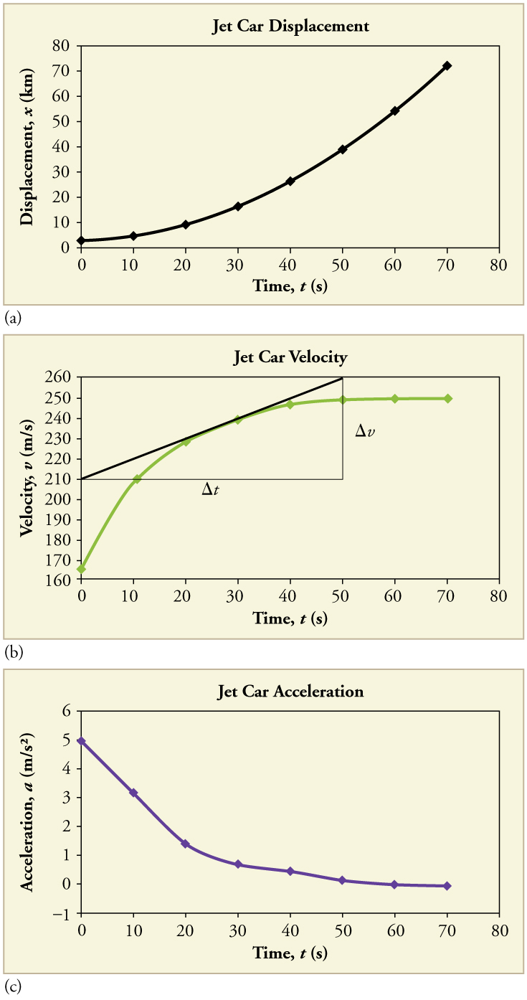
Calculate the acceleration of the jet car at a time of 25 s by finding the slope of the \(\displaystyle v\) vs. \(\displaystyle t\) graph in Figure \(\PageIndex{6b}\).
The slope of the curve at \(\displaystyle t=25 s\) is equal to the slope of the line tangent at that point, as illustrated in Figure \(\PageIndex{6b}\).
Determine endpoints of the tangent line from the figure, and then plug them into the equation to solve for slope, .
Note that this value for a is consistent with the value plotted in Figure(c) at \(\displaystyle t=25 s\).
A graph of displacement versus time can be used to generate a graph of velocity versus time, and a graph of velocity versus time can be used to generate a graph of acceleration versus time. We do this by finding the slope of the graphs at every point. If the graph is linear (i.e., a line with a constant slope), it is easy to find the slope at any point and you have the slope for every point. Graphical analysis of motion can be used to describe both specific and general characteristics of kinematics. Graphs can also be used for other topics in physics. An important aspect of exploring physical relationships is to graph them and look for underlying relationships.
Exercise \(\displaystyle :Check Your Understanding
A graph of velocity vs. time of a ship coming into a harbor is shown below.
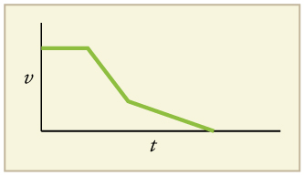
(a) The ship moves at constant velocity and then begins to decelerate at a constant rate. At some point, its deceleration rate decreases. It maintains this lower deceleration rate until it stops moving.
A graph of acceleration vs. time would show zero acceleration in the first leg, large and constant negative acceleration in the second leg, and constant negative acceleration.
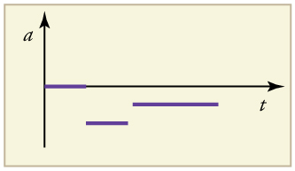
📖 OpenStax College Physics, Section 2.8. openstax.org · CC BY 4.0
| Section | Title |
|---|---|
| 2.1 | 2.1: Displacement |
| 2.2 | 2.2: Vectors, Scalars, and Coordinate Systems |
| 2.3 | 2.3: Time, Velocity, and Speed |
| 2.4 | 2.4: Acceleration |
| 2.5 | 2.5: Motion Equations for Constant Acceleration in One Dimension |
| 2.6 | 2.6: Problem-Solving Basics for One-Dimensional Kinematics |
| 2.7 | 2.7: Falling Objects |
| 2.8 | 2.8: Graphical Analysis of One-Dimensional Motion |